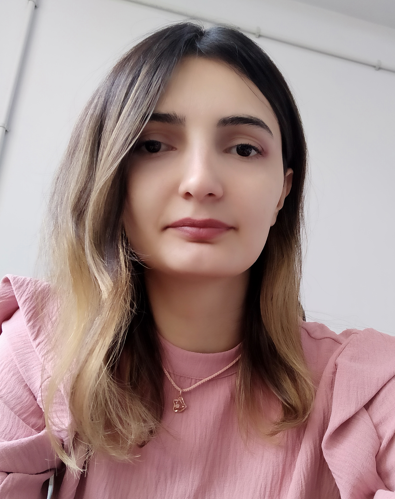

Fault-tolerant quantum computing
Shahla
Novruzova
Doctoral researcher & quantum software developer
I study how quantum error-correcting codes can be designed around real hardware—turning physical noise, loss, and architectural constraints into reliable quantum computation.

Contact
Let’s connect
Quantum error correction, fault-tolerant architectures, and quantum-software development.
shahla.novruzova@ut.eeAbout me
Building reliability into quantum systems
I am a doctoral researcher and quantum software developer at the University of Tartu. My research focuses on fault-tolerant quantum computing, particularly quantum error correction with surface-code families.
I began my research career by studying models of confined quantum wells, which gave me a foundation in quantum mechanics and computational methods. I later shifted my focus to quantum computing, with an emphasis on quantum error correction and quantum circuit simulation.
Today, I use numerical simulation and decoding tools to study how quantum memories behave under realistic physical noise. I am especially interested in hardware-aware code design, lattice surgery, spin-photonic architectures, and efficient fault-tolerant operations.
- Position
- Doctoral Researcher and Quantum Software Developer
- Institute
- Institute of Computer Science, University of Tartu
- Area
- Quantum error correction
- Projects
- OpenSuperQ+ 100 and TK202U7
- Location
- Tartu, Estonia
Education & experience
From theoretical physics to quantum computing
Master’s degree in Theoretical and High Energy Physics
Institute of Physics, Azerbaijan National Academy of Sciences
Quantum Software Developer
University of Tartu, Estonia
Research interests
Codes, noise, and the hardware between them
My work connects abstract fault-tolerance ideas with the physical mechanisms that determine whether they succeed.
Quantum error correction
Surface codes, XZZX variants, logical memories, and decoding under structured physical noise.
Fault-tolerant architectures
Native gate sets, compilation schedules, and code–hardware co-design for scalable quantum computation.
Spin-photonic systems
Heralded photon loss, repeat-until-success entanglement, and loss-aware error models.
Lattice surgery
Resource-efficient logical operations and simulation methods for reliable quantum computation.
Current work
Research in progress
My current projects study how hardware-level erasure mechanisms affect the logical performance of quantum error-correcting codes.
Manuscript in preparation
XZZX surface codes under heralded photon loss in spin-photonic architectures
A hardware-aware comparison of the XZZX and standard surface-code frames when repeat-until-success photon loss is decoded as a heralded phase-erasure process.
Preprints and publications
My current manuscripts are in preparation. arXiv links will be added here when they become public.